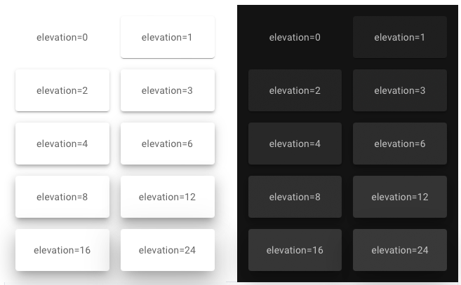

前言
由于最近一些比赛需要前端的搭建来包装一些丑陋的大黑框，因此纠结于使用qt呢还是pythpn flask。但本人并没有任何前端的开发经验，只用过一个python的tkinter做过一个💩的数据库管理系统。好在经过不懈的努力，发现了这样一个帖子https://zhuanlan.zhihu.com/p/448912854，发现了宝贝一般的streamlit。
简单的来说，streamlit是一种相对静态的网页前端框架，并且主要基于markdown（你可以直接把写好的markdown当作网页生成），感觉和hexo博客框架很像？
经过几天的使用，我发现streamlit的程序运行逻辑很神奇，它似乎是不断的重复运行你的前端程序，类似于下面的代码段：
while True:
main()
因此肉眼可见的是，streamlit的性能并不是很高，有的时候还挺卡的。但对于前端需求不是很大的场景，用streamlit绰绰有余，比如只需显示一些结果。
下面就记录一下我使用streamlit的一些过程，和streamlit常用的组件。
session_state
session_state可以用于记录streamlit的会话状态，如果说streamlit整体就是一个循环运行的函数，那么session_state就是全局变量，可以保存每一次运行函数中的信息，比如我要记录test函数的运行次数。正常来说肯定是在代码里设置一个，比方说g_flag，每执行一次test函数，g_flag++，但在实际运行过程中，你可能会发现每次打印g_flag，它的值都为0，但明明运行了不止一遍的test。
此时就需要session_state，下面给出错误写法以及正确写法。
Wrong
g_flag = 0
def test():
g_flag += 1
print(g_flag)
return 0
if __name__=="__main__":
test()
Right
def init():
if "g_flag" not in st.session_state:
st.session_state.g_flag = 0
def test():
st.session_state.g_flag += 1
print(st.session_state.g_flag)
return 0
if __name__=="__main__":
test()
而其session_state的自由度非常高，你可以给它添加任何类型的元素。
write && text && code
write和text、code都能够显示文本，但各有各的特点。
首先是write，它是将字符串以markdown源码的形式直接写到前端界面，注意这个源码就有坑，有些时候一些特殊的字符会安装markdown内的规则显示，比如会讲两个*号之间的字符当成黑体，而实际我们可能并不想这么显示，同理其他各种各样的markdown的特殊字符。
对于上面问题的解决，可以使用text，text是直接当成文本进行输出，并且输出的字体样式有时候还挺好看的，但text的一个缺点就是不能自动换行（可能需要进行设置，反正我不会），这就导致你输入一段很长的字符，就必须靠text提供的横向的滚动条来查看所有内容。
最后是code，code就是显示markdwon的代码段格式，但它也不能换行，不过至少对于代码显示比较好看。
不过综合起来，write的功能是最强的，因为它有很多的参数可以选择，被誉为streamlit的瑞士军刀。
button
作为前端，肯定要有交互，streamlit最常用的就是button了，简单易懂，只需设置一个名字，一个回掉函数就可以了，例如：
def callback():
st.write("success")
def main():
st.button("click", on_click=callback)
main()
这样当我们点击按钮后，就会显示success的提示符。
默认的button比较丑，但是可以通过css样式进行调整，或者是streamlit的组件streamlit_option_menu。
css
刚才提到了css样式的设置，实际上对于css样式我也不太懂，但是在streamlit可以通过markdown文件进行设置css，比如以下的代码就对button设置了样式，让它变成红色的背景。
m = st.markdown("""
<style>
div.stButton > button:first-child {
background-color: #f44336; /* Green */
border: none;
color: white;
padding: 20px 40px;
text-align: center;
text-decoration: none;
display: inline-block;
font-size: 16px;
}
</style>""", unsafe_allow_html=True)
图片以及视频的显示
前端不能没有图片，就像西方不能没有耶路撒冷。。。
streamlit中可以通过st.image来插入图片以及gif图，但视频的插入，以及图片的一些调整很难实现，这是就需要html这个函数了，通过st.html可以直接将输入的html语句转换到前端显示，因此可以非常方便的播放一些视频，比如下面的例子，就是我在做前端是，实现了循环播放一个小视频，作为前端的动态效果。
st.markdown("""
<video width="250" autoplay="true" muted="true" loop="true" align="center">
<source
src="https://www.jfrogchina.com/wp-content/uploads/2020/02/efficient.mp4"
type="video/mp4" />
</video>
""", unsafe_allow_html=True)
width设置的是视频的大小，autoplay可以设置视频自动播放，loop设置视频的循环播放。在这里不要加入controls参数，否则视频会有一个播放将以及进度条的显示，比较丑。
我在使用的过程发现，src最好是远程的视频链接，本地连接有些bug，如果要使用本地连接，要么开apache，要么用python -m http.server在当前文件夹下开一个服务。
columns分割界面
有时候像写报告式的步骤前端会比较多单调，难看，我们在设计前端时往往会使界面变得更加多层次化，复杂化。比如左边放图片，右边放个表，他俩的下面在放一段字。
streamlit布置界面的思路是markdown，但不难发现markdown文本显示都是一拖到底，此时就可以用st.columns来分割界面。
比如c1, c2 = st.columns(2)，按照1：1分割界面，左边的c1可以单独的使用，右边的c2也可以单独使用，c1和c2的用法和st一模一样，你也可以对c1进行继续分割。
如果不想按照1:1的比例，想分割页面为1:2:2，可以直接写成c1, c2, c3 = st.columns([0.2, 0.4, 0.4])。
当然，如果想要界面更加的好看，可以使用streamlit_elements组件，它至少可以实现下面的效果。

未完待续。。。